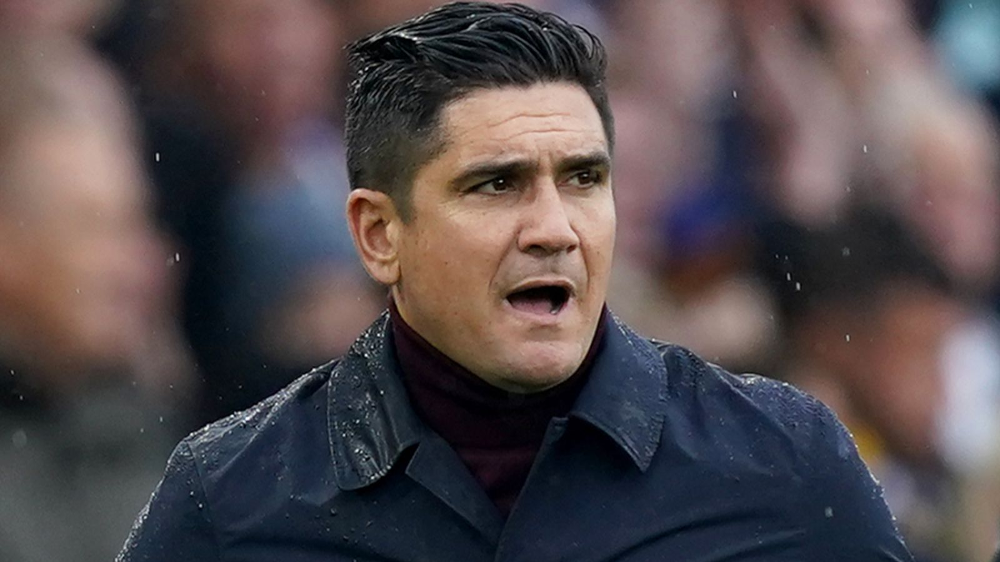

Kylian Mbappe: Real Madrid president Florentino Perez suggests a deal may be reached on January 1
FIFA announces 'Football Tribunal' is up and running

Xisco Munoz: Watford sack head coach after less than 10 months in charge

Brazilian footballer arrested after kicking referee in the head while he lay on the ground
Football Australia to investigate abuse allegations by Matildas players
The mainstreaming of football’s set-piece coaches
Barcelona were addictive to watch,their free fall is too